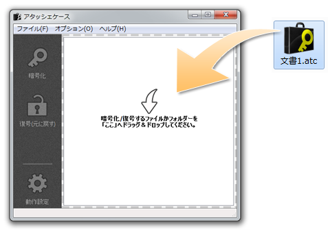
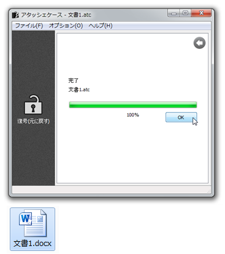

これも暗号化と同じく、アイコン、または開いたフォーム上に、 暗号化したファイルをドラッグ＆ドロップします。

暗号化と同じく、パスワードを求められますので、 自分で設定したパスワードを入力してください。

すぐに復号処理が開始され、 「完了」のメッセージと「100%」を表示されれば、復号は完了しています。 同じ場所に、元のファイルがあるか確認してみてください。

アタッシェケースファイル（*.atc）が関連付けされていれば、 暗号化ファイルを直接ダブルクリックするだけで復号化処理を行います。 さらに、パスワードを記憶させ、処理後アタッシェケースを終了するよう設定されていれば （→「基本設定」）、 ウィンドウが開いたままになることなくファイルが復号化され、暗号/復号化をあまり意識することなく便利に使えます。